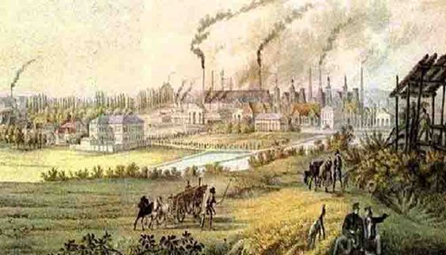

La Rivoluzione Industriale, un periodo epocale che ha cambiato radicalmente la struttura socio-economica del mondo occidentale nel corso del XVIII e XIX secolo, è stata caratterizzata da una transizione significativa da un'economia agricola e basata sul lavoro artigianale a una dominata dalla produzione industriale su larga scala. Questa trasformazione ha avuto il suo inizio in Inghilterra, alimentata da diversi fattori chiave come la crescita demografica, l'avanzamento dell'agricoltura, la prosperità derivante dal commercio globale e l'adozione di nuove fonti di energia. Nel corso di questo approfondimento, esamineremo più da vicino gli elementi chiave che hanno definito questo periodo rivoluzionario.
Il XVIII secolo ha visto un aumento demografico significativo, creando una crescente domanda di beni e servizi. Avanzamento dell'agricoltura inglese La Rivoluzione Agricola ha modernizzato le pratiche agricole, aumentando la produzione alimentare e liberando manodopera per le industrie. Anche grazie all'utilizzo della Rotazione Triennale e della Rotazione Quadriennale.
L'Impero Coloniale britannico e il successo nelle rotte commerciali hanno contribuito a finanziare lo sviluppo industriale.
Il sistema del lavoro a domicilio è stato superato dalla necessità di produrre su larga scala, spinto dall'uso di carbone, acqua e vapore per alimentare nuove macchine. La navetta volante rivoluzionò il telaio, ciò facilitò le produzioni di tessitura.
Durante la Prima Rivoluzione Industriale (XVIII e XIX secolo), l'energia idraulica e l'energia meccanica emersero come motori cruciali per la crescita industriale. I mulini ad acqua sfruttavano la forza dell'acqua per azionare macchine, mentre l'invenzione della macchina a vapore di James Watt permise l'uso diffuso dell'energia meccanica, rivoluzionando la produzione industriale e accelerando lo sviluppo tecnologico ed economico.
Le fabbriche hanno rivoluzionato il modo in cui il lavoro veniva organizzato, concentrando gli operai in un'unica struttura.
Sebbene più efficiente, il lavoro nelle fabbriche era notoriamente duro, pericoloso e scarsamente remunerato, con condizioni di lavoro spesso oppressive. Oltretutto i salari erano bassi, in più, l'igiene in queste fabbriche non era il massimo, quindi, aumentano anche le malattie infettive, ciò peggiora le condizioni di lavoro in fabbrica.
Durante la Prima Rivoluzione Industriale, la divisione del lavoro nelle fabbriche coinvolse la specializzazione delle mansioni, la catena di montaggio, e l'aumento della produttività attraverso la ripartizione di compiti specifici tra i lavoratori. Questo approccio contribuì all'efficienza produttiva, ma generò anche preoccupazioni sulle condizioni lavorative.
Le città industriali sono cresciute rapidamente, portando a una urbanizzazione disordinata e alla formazione di quartieri sovraffollati e degradati. Soprattutto ne risentì l'ambiente, infatti, l'inquinamento del pianeta ebbe solo inizio.
La produzione su larga scala di sostanze chimiche ha rivoluzionato settori come la medicina e l'industria manifatturiera.
L'applicazione di macchine a vapore e motori a combustione interna ha trasformato i trasporti, migliorando la velocità e l'efficienza.
L'energia elettrica è diventata un pilastro fondamentale per molte innovazioni, influenzando l'illuminazione, le comunicazioni e la produzione industriale. Menzionabile Alessandro Volta, creatore della pila, uno degli importanti scienziati dell'epoca.
La Rivoluzione Industriale è stata una fase cruciale nella storia umana, segnando una transizione da un mondo agricolo e artigianale a uno caratterizzato dalla produzione industriale e dalla tecnologia avanzata. Le sue conseguenze sociali, ambientali, scientifiche e tecnologiche hanno plasmato il mondo moderno, portando a sfide e opportunità che persistono ancora oggi.